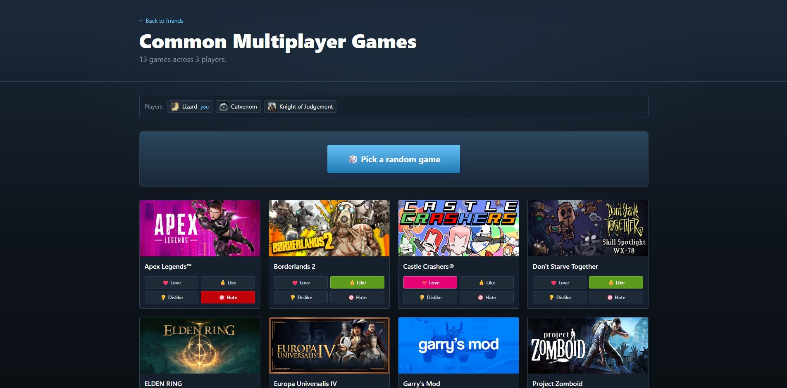

Steam Selector
A web app for friend groups that spend longer picking a game than playing one. Everyone signs in with their Steam account, the app finds the games the whole group owns, and then it picks one to play, giving extra weight to the games people rated highest.
